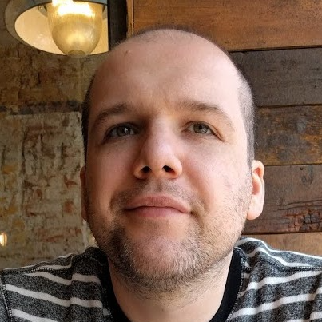
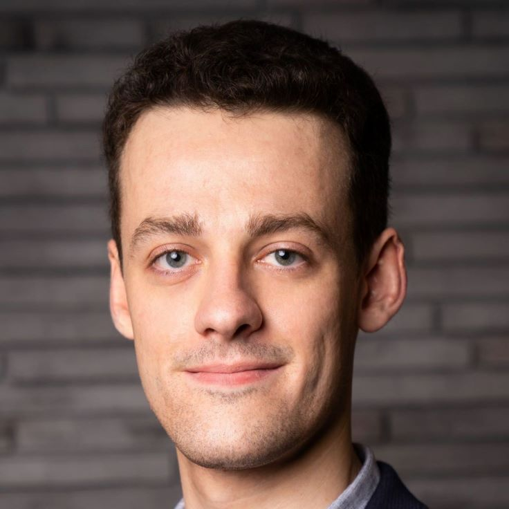
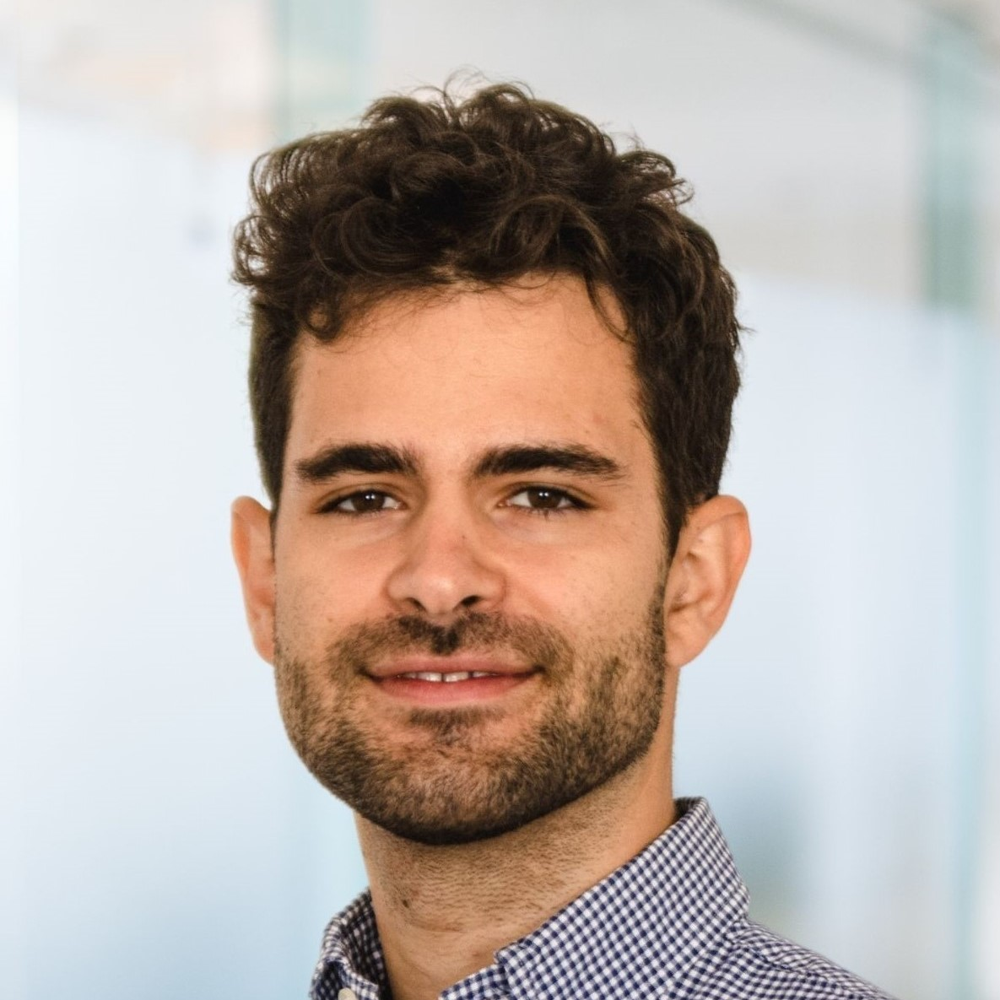

Reinforcement Learning Bootcamp
September 25-27, 2024
PLUS University Salzburg
PLUS University Salzburg
| Home | Program | Registration | Directions |
We're thrilled to announce that the Bootcamp will once again take place in Salzburg from September 17th to 19th this year! While registration is not open yet, stay tuned – it will be available very soon.
The organising team would like to express heartfelt gratitude for the active participation and the vibrant atmosphere brought to our international RL Bootcamp in Salzburg. We had a fantastic time together and were thrilled to welcome an unexpected number of 75 participants. We look forward to seeing you at our RL Bootcamp 2025. Stay tuned!

Reinforcement learning (RL) is a powerful learning paradigm of machine learning (ML). Reinforcement Learning is at the cutting edge of artificial intelligence, powering advancements in robotics, autonomous systems, game playing, and decision-making algorithms. Mastering RL opens up a world of opportunities in both research and industry, enabling you to contribute to groundbreaking innovations.
Capturing your control problem as a meaningful Markov Decision Process (MDP) is not trivial. Additional challenges arise in the training in terms of stability and evaluation. Other practical aspects include reproducibility, efficiency, implementation, deployment in hardware, and choosing the most suitable algorithm for your problem.
RL applications are very promising, but have been deployed in real machines only a handful of times. This workshop aims at lowering the barrier in applying RL and making it a more used tool.
The event is hosted by the Smart Analytics and Reinforcement Learning (SARL) team at IDA Lab, PLUS University of Salzburg, in collaboration with Fraunhofer Austria and AI Austria. It is offered free of charge to ensure accessibility for all those interested in Reinforcement Learning. We are thrilled about our lineup of keynote speakers and eagerly anticipate their presentations!
|
 Razvan Pascanu Research Scientist Google DeepMind |
Razvan Pascanu is a research scientist at Google Deepmind. He received his PhD from University of Montreal under the supervision of Prof. Yoshua Bengio. His research focuses on several key areas: understanding how to optimize deep models efficiently and at scale, making learning more data-efficient, particularly in Reinforcement Learning (RL) and exploring the dynamics of learning, especially under gradient descent conditions. |
|
 Kai Dresia Research Scientist German Aerospace Center (DLR) |
Kai Dresia received his master's degree in aerospace engineering from RWTH Aachen University, Germany. He is a research scientist for intelligent rocket engine control systems at the German Aerospace Center (DLR). The goal of his research is to develop and experimentally test an intelligent rocket engine controller for future liquid propellant rocket engines. |
 Anton Fuxjaeger EnliteAI Gmbh Head of Reinforcement Learning |
Anton Fuxjaeger received his master's degree in Pervasive Parallelism (AI) from University of Edinburgh, Scotland. He leads EnliteAI's research and development team in the area of Reinforcement Learning. The goal of his research is applied Reinforcement Learning, with a strong focus on power grid optimization. He is also developing the open source RL framework Maze (enlite-ai/maze). |
|

Michael Somma AI Researcher in Cybersecurity Joanneum Research |
As an AI Researcher at Joanneum Research in Graz, he brings a broad portfolio in artificial intelligence in academic and commercial settings. As a Research Associate at the University of Vienna, he gained experience applying various machine learning techniques, including computer vision and regression models, contributing to two FWF-funded research projects. At Deloitte, he led the deployment of advanced natural language processing solutions and was instrumental in pioneering RL applications. His expertise spans developing automated trading systems with RL and integrating RL into physical simulations. |
 Simon Hirlaender
Simon Hirlaender  Sabrina Pochaba
Sabrina Pochaba